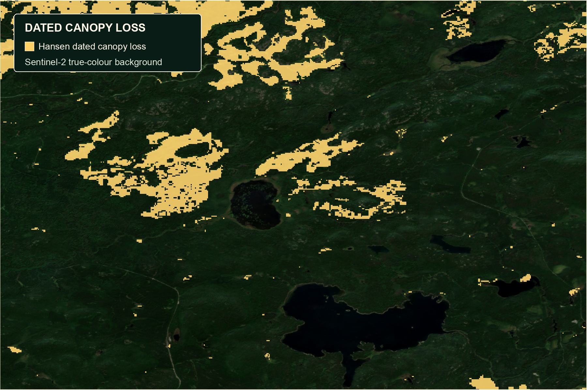
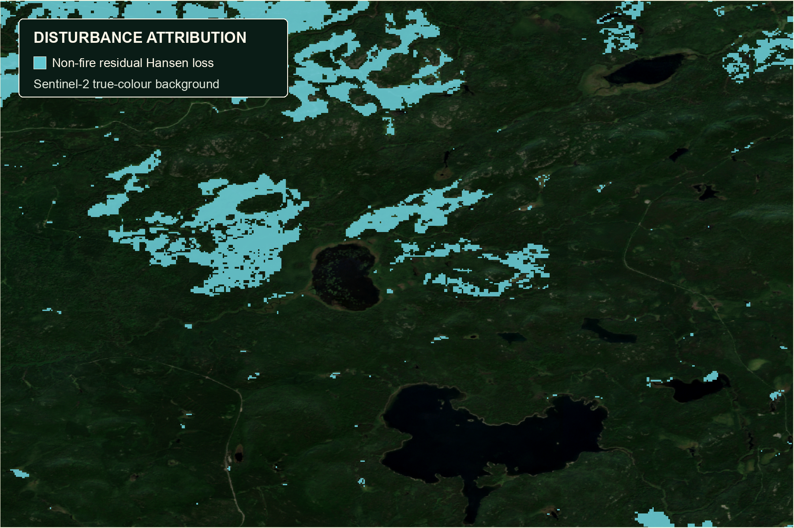
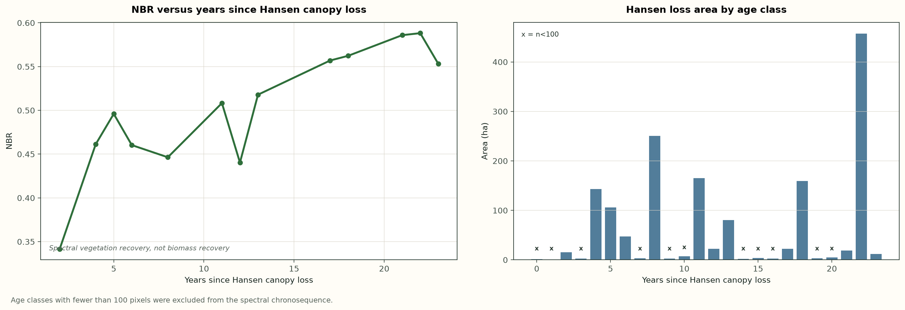
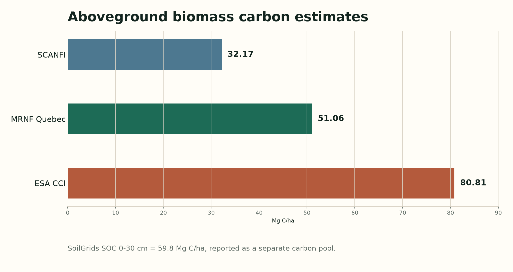
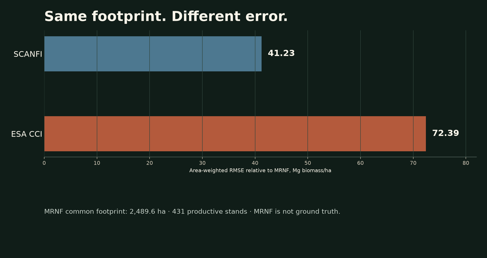

Boreal Ledger
Google Earth Engine + Python for boreal forest analysis
From disturbance history to recovery and carbon uncertainty in a managed forest landscape in Abitibi, Quebec.
View repositoryReal forest landscape. Reproducible spatial evidence.
The workflow separates dated canopy loss, disturbance attribution, spectral recovery, forest structure, and carbon/product uncertainty before making scientific interpretations.
Canopy height is not stand age. NBR is not biomass recovery. Non-fire Hansen loss is not directly observed harvest.

What happened?
Part of the landscape has directly dated canopy loss.
- 10.1%
- dated Hansen canopy loss since 2001
- 14.6 years
- mean time since loss within the dated fraction
Hansen loss year dates canopy-loss events where the product detects them. The undated remainder is left undated by this method.

What caused it?
No mapped fire signal in the dated disturbance.
- 1,015.5 ha
- non-fire residual
- 0.0 ha
- fire-associated loss
- 0
- NBAC fire perimeters intersecting the AOI, 1972-2023
The attribution is a year-matched overlay. In this managed forest context, the non-fire residual is interpreted as probable harvest.

A probable post-harvest spectral recovery chronosequence.
Sentinel-2 NBR from 2024 is grouped by years since Hansen canopy loss. Thirteen of 24 age classes were retained after the >=100 pixel filter.
Carbon
One landscape. Three AGB products. Very different answers.

The disagreement between products is itself an analytical result.
MRNF is a provincial inventory-derived reference for productive stands, not ground truth. Soil organic carbon stock, 0-30 cm, is reported separately as 59.8 Mg C/ha and is not summed with AGB.
Test the disagreement
Same footprint. Different error.
The common-footprint comparison uses 2,489.6 ha and 431 productive stands. It tests the raster products against the same provincial inventory-derived spatial support.
For this study area, SCANFI showed better agreement with the Quebec provincial inventory-derived reference than ESA CCI on a common spatial footprint.
MRNF is not ground truth.
Open common-footprint script
Reproducible Workflow